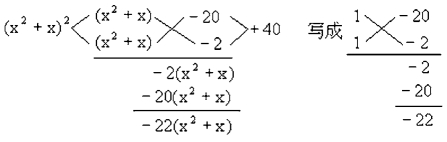
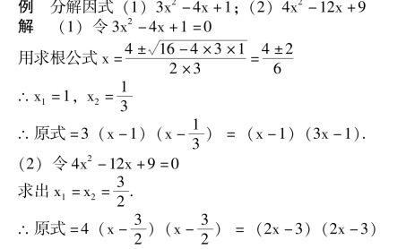
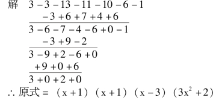
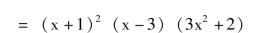
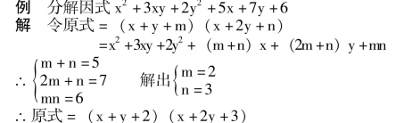

因式分解
【分解因式】
把一个多项式化成几个整式的积的形式，叫因式分解或分解因式.
【公因式】
一个多项式每一项都含有的相同的因式叫做这个多项式各项的公因式；几个多项式中每个多项式都含有的相同因式叫这几个多项式的公因式.
【提取公因式法】
多项式分解因式的一种方法，它的具体步骤是:
(1) 求每一项系数的最大公约数；
(2) 求每一项同底数幂的最小指数幂；}公因式
(3) 将各项除以公因式，求出各项的补因式(各项除以公因式的商叫每一项的补因式).
(4) 把多项式写成公因式与补因式积的形式.
【运用公式法分解因式】
(1) 平方差公式两个数的平方差，等于这两个数的和与这两个数的差的积.即a2－b2＝ (a ＋b) · (a－b).
(2) 完全平方公式两个数的平方和，加上(或减去)这两个数的积的2 倍，等于这两个数的和(或差) 的平方.即a2±2ab ＋b2＝ (a±b)2.
(3) 立方和与立方差公式两个数的立方和(或差) 等于这两个数的和(或者差) 乘以它们的平方和与它们积的差(或和).即
(4) 可化成x2＋ (a ＋b) x ＋ab 型的二次三项式的因式分解x2＋ (a ＋b) x ＋ab ＝ (x ＋a) (x ＋b).
【十字相乘法】
用竖式乘法帮助把二次三项式分解因式的方法，叫十字相乘法，也叫观察法.如a1a2x2＋ (a1c2＋a2c1) x ＋c1c2＝ (a1x ＋c1) (a2x ＋c2)
例 分解因式(x2＋x)2＝22 (x2＋x) ＋40；

∴原式＝ (x2＋x－20) (x2＋x－2)
＝ (x ＋5) (x－4) (x ＋2) (x－1)
说明: 二次三项式ax2＋bx ＋c 分解因式可以用求根法.设ax2＋bx ＋c ＝0 的两个根x1，x2时，ax2＋bx ＋c ＝a (xx1) (x－x2)

求出x ＝ (2x－3)2
说明: 用求根分解二次三项式可以代替十字相乘法.
【分组分解法】
利用分组来分解因式的方法一般有: (1) 等项分组:把多项式分成相等的项，先对每组进行分解，再提出各组的公因式；(2) 按公式分组: 把多项式按公式分成几组先利用公式分解各组或其中的某组，而后再进行分解.
例 分解因式ab (a－b) ＋bc (b－c) ＋ca (c－a)
解 原式＝ab (a－b) ＋c [b (b－c) ＋a (c－a)]
＝ab (a－b) ＋c (b2－bc ＋ac－a2)
＝ab (a－b) ＋c [ (b2－a2) － (bc－ac)]
＝ab (a－b) ＋c [ (b－a) (b ＋a) －c (b－a)]
＝ab (a－b) ＋c (b－a) (a ＋b－c)
＝ab (a－b) －c (a－b) (a ＋b－c)
＝ (a－b) [ab－c (a ＋b－c)]
＝ (a－b) [ab－ac－bc ＋c2]
＝ (a－b) [ (ab－ac) － (bc－c2)]
＝ (a－b) [a (b－c) －c (b－c)]
＝ (a－b) (b－c) (a－c)
或原式＝ab (a－b) ＋b2c－bc2＋ac2－a2c
＝ab (a－b) ＋c2(a－b) －c (a2－b2)
＝ab (a－b) ＋c2(a－b) －c (a－b) (a ＋b)
＝ (a－b) [ab ＋c2－ac－bc]
＝ (a－b) [b (a－c) －c (a－c)]
＝ (a－b) (a－c) (b－c)
【添项或拆项分组法】
把多项式中的项加以变形、添项或一项拆成几项后，分组分解的方法.
例 分解因式(1) x3－3x ＋2；(2) 3x5－3x4－13x3－11x2－10x－6；(3) 6x4＋5x3＋3x2－3x－2.
解 (1) 原式＝x3－x2＋x2－x－2x ＋2
＝ (x3－x2) ＋ (x2－x) － (2x－2)
＝ (x－1) (x2＋x－2)
＝ (x－1)2(x ＋2)
(2) 原式＝3x5＋3x4－6x4－6x4－7x3－7x2－4x2－4x－6x－6
＝ (3x5＋3x4) － (6x4＋6x3) － (7x3＋7x2) － (4x2＋4x) － (6x ＋6)
＝3x4(x ＋1) －6x3(x ＋1) －7x2(x ＋1) －4x (x ＋1) －6 (x ＋1)
＝ (x ＋1) (3x4－6x3－7x2－4x－6
＝(x ＋1) (3x4＋3x3－9x3－9x2＋2x2＋2x－6x－6)
＝ (x ＋1) [ (3x4＋3x3) － (9x3＋9x2)＋ (2x2＋2x) － (6x ＋6)]
＝ (x ＋1) [3x3(x ＋1) －9x2(x ＋1) ＋2x (x ＋1) －6 (x ＋1)]
＝ (x ＋1) (x ＋1) (3x3－9x2＋2x－6)
＝ (x ＋1)2[ (3x3－9x2) ＋ (2x－6)]
＝ (x ＋1)2[3x2(x－3) ＋2 (x－3)]
＝ (x ＋1)2(x－3) (3x2＋2)
(3) 原式＝6x4＋3x3＋2x3＋x2＋2x2＋x－4x－2
＝ (6x4＋3x3) ＋ (2x3＋x2) ＋ (2x2＋x)－ (4x ＋2)
＝3x3(2x ＋1) ＋x2(2x ＋1) ＋x (2x ＋1) －2 (2x ＋1)
＝ (2x ＋1) (3x3＋x2＋x－2)
＝ (2x ＋1) (3x3－2x2＋3x2－2x ＋3x－2)
＝ (2x ＋1) [ (3x3－2x2) ＋ (3x2－2x)＋ (3x－2)]
＝ (2x ＋1) [x2(3x －2) ＋x (3x －2) ＋(3x－2)]
＝ (2x ＋1) (3x－2) (x2＋x ＋1).
说明: 添项、拆项的根据是判断因式，只有判断出多项式存在某个因式时，才有可能将原多项式变形(拆、添).判断因式的方法是综合除法.
【用综合除法分解因式】
用x－b 除有理整式f (x) ＝a0xn＋a1xn－1 ＋a2xn－2＋…＋an－1x ＋an所得的余数为f (b) ＝a0bn＋a1bn－1 ＋a2bn－2 ＋…＋an－1b ＋an(余数定理)，若f (b) ＝0 时，f (x) 有x－b 的因式.用综合除法找出多项式的因式，从而分解因式的方法.
例 分解因式3x5－3x4－13x3－11x2－10x－6


说明: (1) 用综合除法试商时，要由常数项和最高次项系数来决定.常数项的因数除以最高次项系数的因数的正负值都可能是除的整除商.上例中常数项是6，最高次项系数是3 它们的因式可能是x ±1，x ±2，x ±3，x ±6，3x±1，3x±2.试除时先从简单的入手.
(2) 因式可能重复.
【用待定系数法分解因式】
先判定分解后的形式，设出待定的系数，用解方程组的方法求出系数使多项式因式分解的方法.

说明: (1) 先将多项式排列，将二次齐次项分解，再设出待定系数，用方程组去解.(2) 方程组中两个未知数三个方程，实际上，只需要任意两个.(3) 上例可改用十字相乘解，解法如下: 先用十字相乘分解二次齐次项为积.
【换元分解法】
用一个字母表示一个代数式，分解后再写回原来所替换的代数式的因式分解方法.
例 分解因式(1) x6－7x3－8；(2) x (x ＋1) (x ＋2) (x ＋3) －24.
解 (1) 令t ＝x3代入原式
原式＝t2－7t－8
＝ (t－8) (t ＋1)
＝ (x2－8) (x3＋1)
＝ (x－2) (x2＋2x ＋4) (x ＋1) (x3－x ＋1).
(2) 原式＝ (x2＋3x) (x2＋3x ＋2) －24
令x2＋3x ＝t 代入
原式＝t (t ＋2) －24
＝t2＋2t－24
＝ (t－4) (t ＋6)
＝ (x2＋3x－4) (x2＋3x ＋6)
＝ (x－1) (x ＋4) (x2＋3x ＋6)
例 分解因式(1) 2 (x－y) 2 －x ＋y －3；(2) (x ＋1) (x ＋3) (x－2) (x－4) ＋24
解 (1) 令t ＝ (x－y) 代入原式
原式＝2t2－t－3
＝ (2t－3) (t ＋1)
＝ (2x－2y－3) (x－y ＋1)
(2) 原式＝(x ＋1)(x－2)·(x ＋3)(x－4) ＋24＝ (x2－x－2) (x2－x－12) ＋24
令x2－x ＝t 代入原式
原式＝ (t－2) (t－12) ＋24
＝t2－14t ＋24 ＋24
＝t2－14t ＋48
＝ (t－6) · (t－8)
＝ (x2－x－6) (x2－x－8)
＝ (x－3) (x ＋2) (x2－x－8)
注意: 只有出现相同的部分才能换元.
【因式分解的步骤】
(1) 先提公因式；
(2) 二项式可用平方差，立方和，立方差、配方法；
(3) 三项式①先用完全平方公式；②二次三项式可用十字相乘或求根公式法；③高次时用综合除法或拆补项；
(4) 四项或四项以上多项式用分组法、综合除法.①分组时，可按一个字母分组；②按两个字母整理；③等项分组或按公式分组.
注意: (1) 因式分解要指定范围，一般如不加说明，只分解到有理数为止.(2) 因式分解要使每个因式都成为质因式为止.